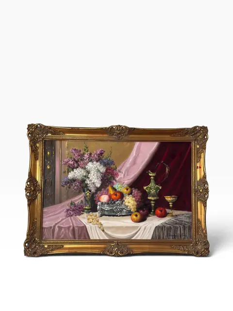
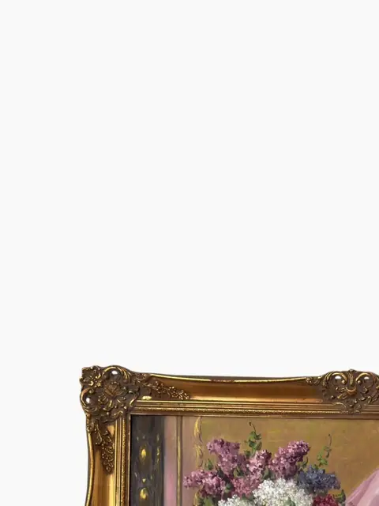
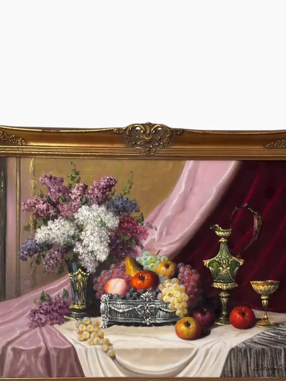
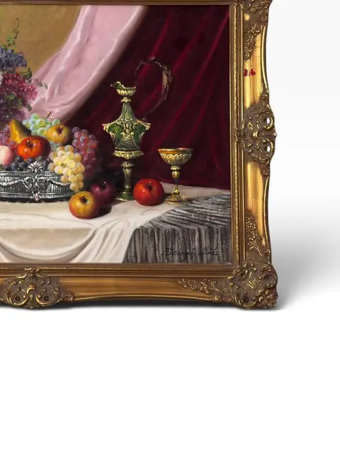
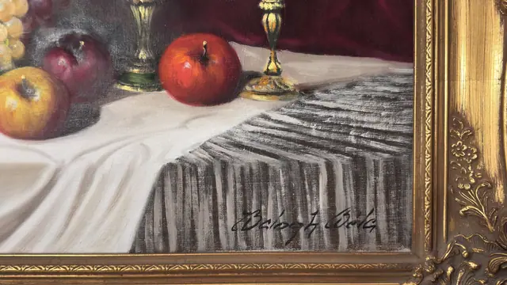
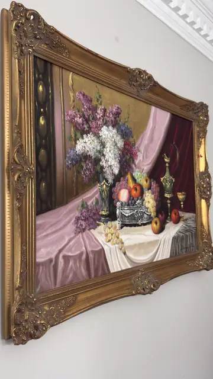
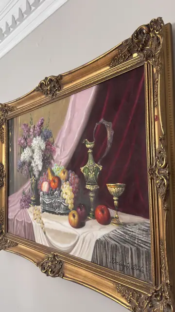
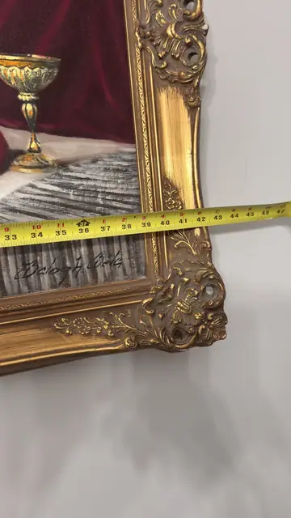
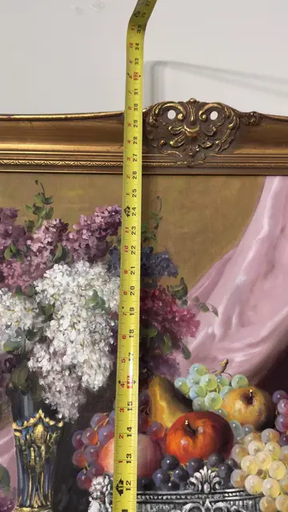

Paintings & Prints
Still Life with Lilacs, Fruit and Silver Vessels
Béla Balogh · 20th century
Price Upon Request










About the Item
A lavish European still life in the grand continental manner: lilac blossoms in a blue-and-gold vase, a silver fruit basket spilling grapes and apples, and a gleaming ewer and goblet arranged on a draped table against a deep crimson curtain. Richly painted with a jeweller's eye for metalwork and petal, and housed in a sumptuous carved gilt frame. A warm, romantic statement piece for a dining room or classical interior. Signature lower right clearly reads 'Balogh J. Béla' (visible in 07_orijinal.jpg). Attribution verified against auction records: Béla Balogh (Hungarian, 1909-1980) is documented for flower-and-fruit still lifes with silver vessels on canvas, signed lower right, in ornate gilt frames (Invaluable, Winckelmann Gallery, Chiswick Auctions). Tape-measure photos are partial (no full span readable) — dimensions listed as not legible. Signature detail: Signed lower right 'Balogh J. Béla'.
Details
- Creator:
- Béla Balogh
- Creation Year:
- 20th century
- Medium:
- Oil on canvas
- Period:
- 20Th
- Condition:
- Offered in the condition shown in the photographs.
- Reference Number:
- VO-296